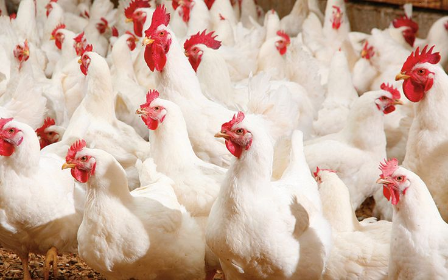
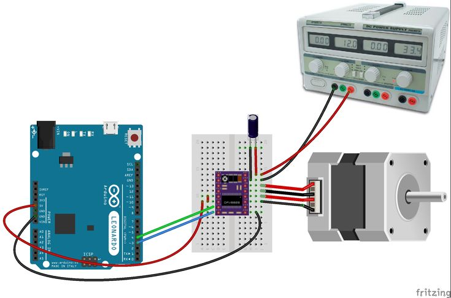

Introduction
L’aviculture occupe une place importante dans l’économie et la sécurité alimentaire, en particulier dans les pays en développement. La production de poulets de chair et de poules pondeuses nécessite un suivi rigoureux des paramètres tels que la température, l’humidité, l’alimentation, l’eau et la santé des volailles. Cependant, les méthodes traditionnelles de gestion sont souvent manuelles, peu précises et chronophages. Avec l’évolution des technologies numériques, l’Internet des Objets (IoT) offre de nouvelles opportunités pour moderniser l’élevage avicole. L’IoT permet de collecter automatiquement des données en temps réel à l’aide de capteurs connectés, et de les visualiser via des tableaux de bord accessibles sur le web ou sur mobile.Ce projet vise donc à mettre en place un système intelligent de suivi et de gestion des poulets de chair et des poules pondeuses afin d’améliorer la productivité, réduire les pertes et faciliter la prise de décision des éleveurs.

Contexte
Dans de nombreuses fermes avicoles, surtout au niveau local, la gestion des élevages repose encore sur l’observation humaine et l’expérience de l’éleveur. Les paramètres environnementaux ne sont pas toujours mesurés avec précision, ce qui peut entraîner des maladies, une mortalité élevée ou une baisse de production (viande et œufs). Par ailleurs, l’accès aux outils numériques devient de plus en plus répandu grâce aux smartphones et à la connexion Internet. L’utilisation d’un tableau de bord web ou mobile permet aux éleveurs de suivre à distance l’état de leur élevage, même sans être physiquement présents sur le site. Dans ce contexte, l’intégration de l’IoT dans l’aviculture apparaît comme une solution innovante et adaptée pour moderniser la gestion des poulets de chair et des poules pondeuses, tout en tenant compte des réalités locales.
Problématique
La gestion traditionnelle des élevages de poulets de chair et de poules pondeuses présente plusieurs difficultés :Absence de suivi en temps réel des paramètres environnementaux (température, humidité, etc.) Risque élevé de maladies et de mortalité Difficulté à détecter rapidement les anomalies Perte de temps dans la collecte manuelle des données Manque d’outils d’aide à la décision pour l’éleveur Face à ces problèmes, la question principale est la suivante :Comment concevoir un système intelligent basé sur l’IoT permettant de surveiller et de gérer efficacement les poulets de chair et les poules pondeuses, tout en offrant un tableau de bord web et mobile simple, accessible et fiable ?
Objectif
Objectif général : Mettre en place un système intelligent basé sur l’Internet des Objets permettant le suivi et la gestion en temps réel des poulets de chair et des poules pondeuses à travers un tableau de bord web et mobile. Objectifs spécifiques Collecter automatiquement les données environnementales (température, humidité, alimentation, eau, etc.) à l’aide de capteurs IoT Surveiller l’état de l’élevage en temps réel, Détecter rapidement les anomalies et envoyer des alertes à l’éleveur. Faciliter la gestion quotidienne de l’élevage Améliorer la productivité et réduire les pertes Offrir une interface simple et intuitive accessible sur web et smartphone.